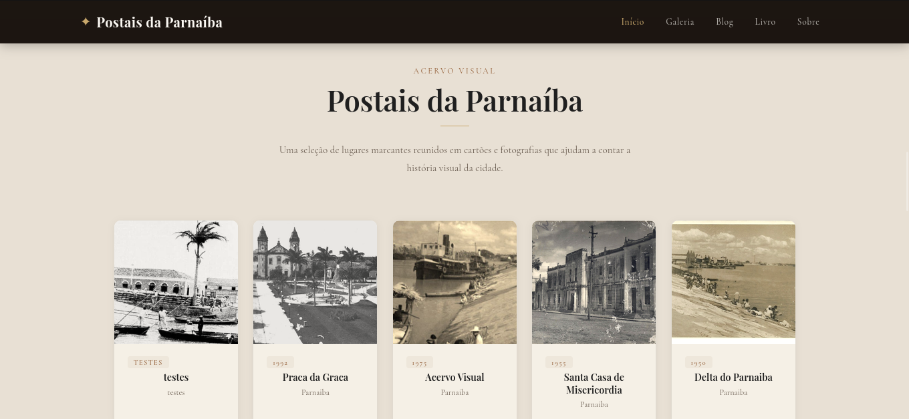
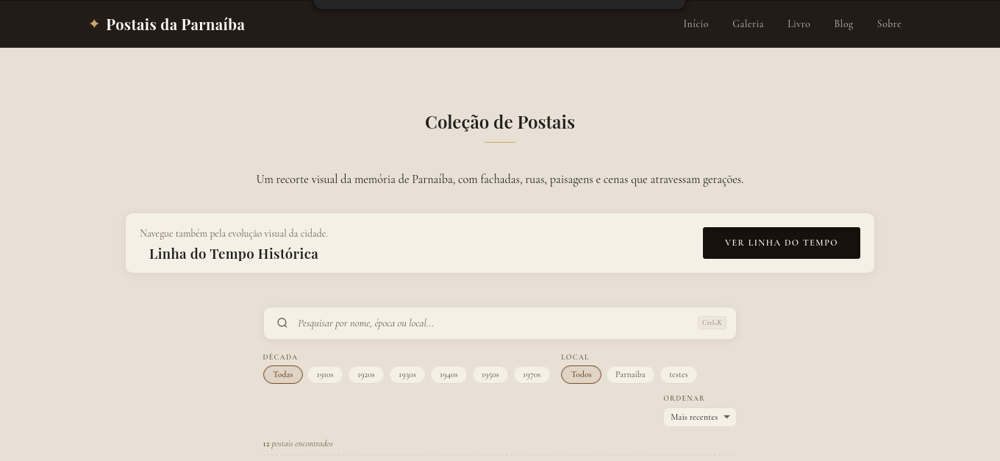
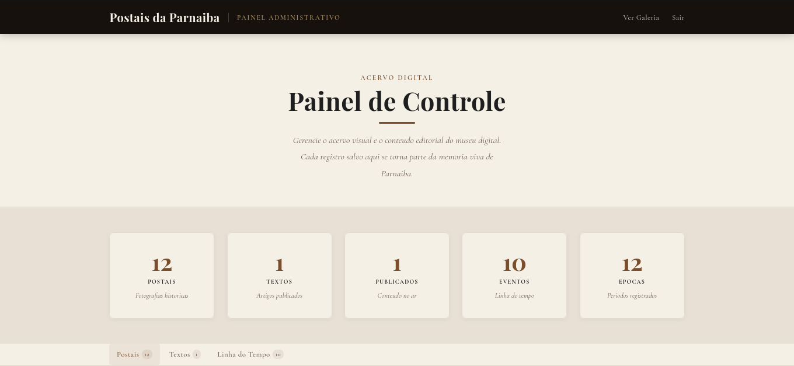

Postais da Parnaíba
Uma experiência editorial para preservar e apresentar a memória histórica de Parnaíba.
- Escopo autoral
- Frontend público, interações e cliente administrativo
- Fontes de dados
- Conteúdo local + API externa esperada
O que implementei
- Site multipágina com conteúdo editorial e acervo visual
- Slider com navegação por teclado e comparador antes/depois
- Galeria, timeline e crônicas consumindo contrato HTTP
- Painel cliente para CRUD de conteúdo e upload de imagens
Decisão técnica
HTML estático para o conteúdo editorial e JavaScript separado para coleções dinâmicas, sem etapa de build.
Limite atual
A API não está neste repositório e usa localhost por padrão; o formulário administrativo ainda precisa de ajuste de validação.
- HTML
- CSS
- JavaScript
- Fetch API